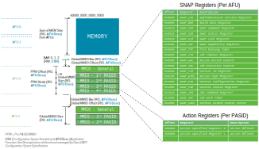

SNAP Registers
Overview
SNAP registers are defined in the MMIO General space for each AFU. Action specific registers (registers related to AFU's function) are defined in the per PASID MMIO space. All of those address mapping parameters (BAR, MMIO general, MMIO PASID, and also memory space) are specified with respect to OpenCAPI configuration space specification. SNAP core hardware is responsible for handling the configuration read/write from host and maintaining the configuration space and SNAP registers.

Register Definition
Impl. Version Register (IVR)
| Name | Offset | Description |
|---|---|---|
| Implementation Version Register | 0x0000 | POR value depends on source for the build. Example for build based on commit with SHA ID eb43f4d80334d6a127af150345fed12dc5f45b7c and with distance 13 to SNAP Release v1.25.4: 0x0119040D_EB43F4D8 |
Bitwise definition
| Bits | Attributes | Description | |
|---|---|---|---|
| 63..40 | RO | SNAP Release | |
| 63..56 | RO | Major release number | |
| 55..48 | RO | Intermediate release number | |
| 47..40 | RO | Minor release number | |
| 39..32 | RO | Distance of commit to SNAP release | |
| 31..0 | RO | First eight digits of SHA ID for commit |
Build Date Register (BDR)
| Name | Offset | Description |
|---|---|---|
| Build Date Register | 0x0008 | POR value depends on build date and time. Example for build on January 12th, 2017 at 15:27: 0x00002017_01121527 |
Bitwise definition
| Bits | Attributes | Description |
|---|---|---|
| 63..48 | RO | Reserved |
| 47.. 0 | RO | BCD coded build date and time |
| 47..32 | RO | YYYY (year) |
| 31..24 | RO | mm (month) |
| 23..16 | RO | dd (day of month) |
| 15..08 | RO | HH (hour) |
| 07..00 | RO | MM (minute) |
SNAP Command Register (SCR)
| Name | Offset | Description |
|---|---|---|
| SNAP Command Register | 0x0010 | Send SNAP commands via this register |
Bitwise definition
| Bits | Attributes | Description |
|---|---|---|
| 63..48 | RW | Argument |
| 47..8 | RO | Reserved |
| 7..0 | RW | Command. Legal commands are: |
| 0x10 Exploration Done: Set Exploration Done bit in SNAP status register. Argument bits 63..52: Don't care. Argument bits 51..48: Maximum Short Action Type | ||
| 0x08 Reset: Reset the complete SNAP framework including all actions immediately. Argument: Don't care | ||
| 0x04 Abort: Abort current jobs and set accelerator to finished immediately (asserting aXh_jdone). Argument: Don't care | ||
| 0x02 Stop: Finish current jobs, then set accelerator to finished (asserting aXh_jdone). Argument: Don't care | ||
| 0x00 NOP |
SNAP Status Register (SSR)
| Name | Offset | Description |
|---|---|---|
| SNAP Status Register | 0x0018 | POR value: 0x0000000000000000 |
Bitwise definition
| Bits | Attributes | Description |
|---|---|---|
| 63..9 | RO | Reserved |
| 8 | RO | Exploration Done. This means that the ATRi setup is complete and the values are valid |
| 7..4 | RO | Maximum Short Action Type (number of Short Action Types - 1) |
| 3..0 | RO | Maximum Action ID |
SNAP Lock Register (SLR)
| Name | Offset | Description |
|---|---|---|
| SNAP Lock Register | 0x0020 | POR value: 0x0000000000000000 |
Bitwise definition
| Bits | Attributes | Description |
|---|---|---|
| 63..1 | RO | Reserved |
| 0 | RW | Lock (Set on Read) |
SNAP Capability Register (SCR)
| Name | Offset | Description |
|---|---|---|
| SNAP Capability Register | 0x0030 | Define the capability of the card |
Bitwise definition
| Bits | Attributes | Description |
|---|---|---|
| 63..40 | RO | Reserved |
| 39..36 | RO | Minimum size for DMA transfers to/from Host. Value t means that minimum transfer size is 2^t B |
| 35..32 | RO | Data alignment for DMA transfers to/from Host. Value a means that transfers need to be 2^a B aligned |
| 31..16 | RO | Size of attached on-card SDRAM in MB |
| 15..9 | RO | Reserved |
| 8 | RO | NVMe enabled |
| 7..0 | RO | Card type: |
| 0x13 : S241 | ||
| 0x12 : FX609 | ||
| 0x11 : RCXVUP | ||
| 0x10 : N250SP | ||
| 0x03 : AD8K5 | ||
| 0x02 : S121B | ||
| 0x01 : N250S | ||
| 0x00 : ADKU3 |
Freerunning Timer (FRT)
| Name | Offset | Description |
|---|---|---|
| Freerunning Timer | 0x0080 | Counting the number of clock cycles since reset |
Bitwise definition
| Bits | Attributes | Description |
|---|---|---|
| 63..0 | RO | Counter counting the number of clock cycles since reset (afu open). This counter increments with the 250MHz PSL clock |
Job Timeout Register (JTR)
| Name | Offset | Description |
|---|---|---|
| Job Timeout Register | 0x0088 | POR value: 0x80000000_0ABA9500 timeout enabled with 1s |
Bitwise definition
| Bits | Attributes | Description |
|---|---|---|
| 63 | RW | Enable Job Timeout checking (1=enabled) |
| 62..32 | RO | Reserved |
| 31..0 | RW | Job Timeout value (this value decrements with the 250MHz PSL clock) |
Action Active Counter (AAC)
| Name | Offset | Description |
|---|---|---|
| Action Active Counter | 0x0090 | Counter counting the number of clock cycles with an active action |
Bitwise definition
| Bits | Attributes | Description |
|---|---|---|
| 63..0 | RO | Counter counting the number of clock cycles with an active action. (TBD: when is an action considered active?). This counter increments with the 250MHz PSL clock. |
Job Execution Counter (JEC)
| Name | Offset | Description |
|---|---|---|
| Job Execution Counter | 0x0098 | Counter counting the number of clock cycles while a job gets executed |
Bitwise definition
| Bits | Attributes | Description |
|---|---|---|
| 63..0 | RO | Counter counting the number of clock cycles while a job gets executed (TBD: when is a job considered as being executed?). This counter increments with the 250MHz PSL clock. |
Context ID Register (CIR)
| Name | Offset | Description |
|---|---|---|
| Context ID Register | 0x00A0 | Context ID in this register |
Bitwise definition
| Bits | Attributes | Description | |
|---|---|---|---|
| 63 | RW | Set to '1' for master register 0 for slave | |
| 62..0 | RO | Reserved (no context ID for master bit 63 = 1) | |
| 62..9 | RO | Reserved (if bit 63 = 0) | |
| 8..0 | RO | My context id (if bit 63 = 0). (9 bits corresponding to context IDs in the range 0..511) |
Action Type Register i (ATRi)
| Name | Offset | Description |
|---|---|---|
| Action Type Register i (0 <= i < 16) | 0x0100 + i * 0x008 | POR value: 0x00000000_00000000. LIBSNAP needs to specify the values based on the result of an exploration phase |
Bitwise definition
| Bits | Attributes | Description |
|---|---|---|
| 63..36 | RO | Reserved |
| 35..32 | RW | Internal Short Action Type |
| 31.. 0 | RW | Action type for action i (all zero if no Action i is implemented) |
Context Attach Status Vector (CASV)
| Name | Offset | Description |
|---|---|---|
| Context Attach Status Vector m (0 <= m < 16) | 0xC000 + i * 0x008 | Status of each context |
Bitwise definition
| Bits | Attributes | Description |
|---|---|---|
| 63..32 | RO | Reserved |
| 31..0 | RO | Context m*32+k is attached if (and only if) bit k is set (for each k = 0,..,31). |
Job Work Timer (JWT)
| Name | Offset | Description |
|---|---|---|
| Job Work Timer | 0x00001080 + (s+n) * 0x0010000 | Timer for each job |
Bitwise definition
| Bits | Attributes | Description |
|---|---|---|
| 63..0 | RO | Counter counting the number of clock cycles during job execution for this context. (Counter gets reset with every valid Job Queue Configuration Register (QCfgR) write access; the value is persistent during reset). This counter increments with the 250MHz PSL clock. |
Context Configuration Register (CCR)
| Name | Offset | Description |
|---|---|---|
| Context Configuration Register | 0x1000 | Configuration of each context |
Bitwise definition
| Bits | Attributes | Description |
|---|---|---|
| 63..8 | RO | Reserved |
| 7..0 | RW | Context configuration: |
| 0x01: Direct Mode | ||
| 0x02: Rise IRQ when Action goes to IDLE | ||
| 0x04: Rise IRQ when Action is attached |
Context Status Register
| Name | Offset | Description |
|---|---|---|
| Context Status Register | 0x1008 | Status of each context |
Bitwise definition
| Bits | Attributes | Description |
|---|---|---|
| 63..8 | RO | Reserved |
| 7..0 | RO | Context status: |
| 0x80: Short Action Type for this context is assigned | ||
| 0x40: This context is attached to an action | ||
| 0x01: Currently executing job | ||
| 0x00: Context Active |
Job Command Register (JCR)
| Name | Offset | Description |
|---|---|---|
| Job Command Register | 0x1010 | Send command to a job |
Bitwise definition
| Bits | Attributes | Description |
|---|---|---|
| 63..16 | RO | Reserved |
| 15..0 | RO | Job command: |
| 0x0004: Reset Action, than Detach action from context | ||
| 0x0002: Detach action from context | ||
| 0x0001: Attach action to context |